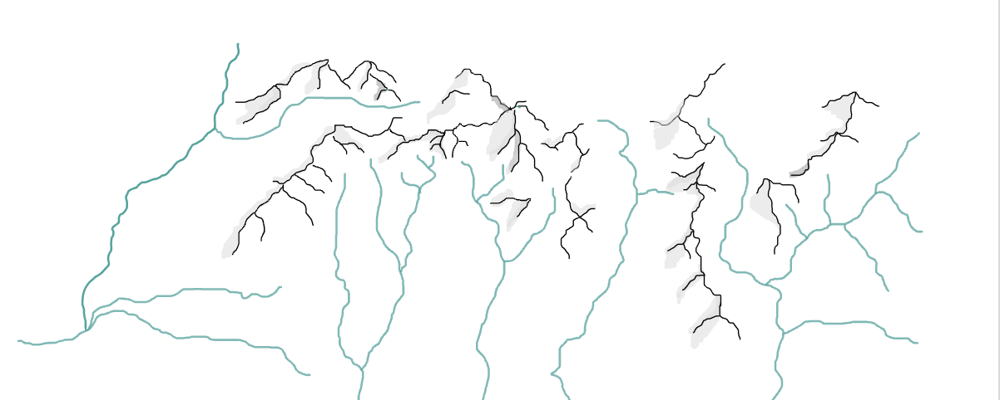

about
I am a PhD candidate at the Stockholm Resilience Centre based at Stockholm University, and part of the SAFER project. The project aims to understand how widespread anthropogenic changes to the global freshwater cycle impact distant regions and countries through teleconnections, to help safeguarding freshwater resilience in the anthropocene.
reseach focus
The hydrological cycle plays an important role in regulating the functioning of the Earth system, sustaining biodiversity, capturing carbon, and is deeply tied to human livelihoods. All the while, it is characterised by intricate coupled systems and feedbacks. Human-induced changes to the biosphere, such as deforestation, intensive agriculture, extensive irrigation, and ever-increasing CO2 emissions, are altering patterns of rainfall, soil moisture, and transpiration from plants, globally.
My research is focussed on understanding global scale freshwater resilience. By looking at changes to these three freshwater variables, I aim to identify which regions in the world are showing signs of water resilience loss, and to better understand the role of hydrological teleconnections in propagating the effects of water resilience loss and the associated risks to distant regions. These teleconnections can be both bio-physical [e.g. the atmospheric moisture transport of evaporated water from one place to fall as precipitation in another], and socio-economic [e.g. the 'virtual' water that is embodied in the commodities we trade and consume].
Using satellite remote sensing and a data-driven approach, my methods include statistical analysis, network analysis, and empirical dynamic modelling.
reseach profiles
google scholar research gate github linkedin
contact
romi.lotcheris [at] su [dot] se
